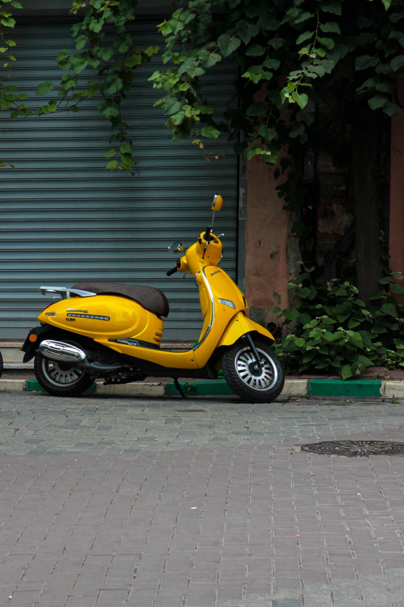

안전
베트남에서 오토바이 도난 막는 법

완벽한 보호는 없지만 몇 가지 습관으로 대부분의 위험을 줄일 수 있습니다. 핵심은 쉽게 몰래 끌고 가거나 실어 갈 수 있는 곳에 두지 않는 것, 그리고 기본 잠금장치에만 의존하지 않는 것입니다.
빈 구석이 아니라 주차장을 고르세요
호텔, 쇼핑몰, 시장, 카페에서는 주차 요원, 차단기, 주차권, 관리 구역을 찾으세요. 자리를 기억하고 오토바이를 찍어 두세요. 직원이 오토바이를 옮긴다면 꼭 필요하지 않은 한 키를 꽂아 두지 말고 어디서 찾는지 확인하세요.

최소한의 보호 세트
- 항상 시동을 끄고 핸들을 잠그세요;
- 눈에 띄는 디스크 락이나 튼튼한 체인을 쓰세요;
- 관리되지 않는 주차장이라면 밤에는 고정된 구조물에 묶으세요;
- 서류와 예비 키를 시트 아래 두지 마세요;
- 휴대폰, 가방, 헬멧을 보이는 곳에 두지 마세요.
디스크 락에서 핸들까지 이어지는 눈에 띄는 알림 줄이 유용합니다. 없으면 잠금을 잊고 출발하다 브레이크 디스크를 망가뜨리기 쉽습니다.
위험이 높은 곳
인적 없는 골목, 카메라 없는 어두운 곳, 해변에 하루 종일 주차, 입구를 아무도 관리하지 않는 곳은 경계하세요. 오래 둘 거라면 목적지 바로 앞에 무방비로 두기보다 공식 주차장에서 몇 분 걷는 게 낫습니다.
휴대폰에 저장할 것
등록 서류, 번호판, 오토바이 전체, 특징적인 흠집을 찍어 두세요. 서류 원본은 여행 상황과 현지 규정에 맞게 보관하되, 디지털 사본은 상황 설명과 오토바이 식별에 빠르게 도움이 됩니다.
오토바이가 사라졌다면
- 먼저 주차 요원, 경비, 근처 가게에 물어보세요: 베트남에서는 오토바이를 자주 옮깁니다.
- 옆 줄과 주차장 출구를 확인하세요.
- CCTV 영상 보존을 요청하세요.
- 정말 없어졌다면 서류, 번호판, 사진을 가지고 경찰에 가세요.
의심 가는 사람과 직접 다투지 마세요. 장소를 기록하고 주차장 직원이나 경찰에 알리세요.
짧은 결론
최고의 보호는 관리되는 주차장과 두 가지 독립적인 장애물: 핸들 잠금과 별도 자물쇠. 떠나기 전 그 1분이 서류와 오토바이를 되찾으려는 어떤 시도보다 쌉니다.
해변, 호텔, 상점에서 자리 고르는 법은 냐짱 주차 글에 있습니다.